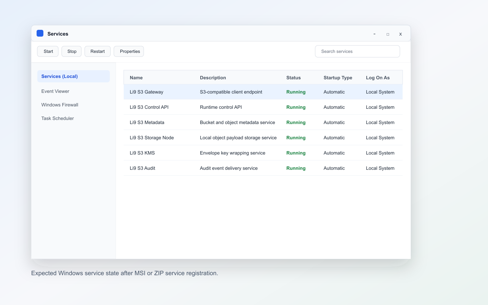

Windows Packages: Installation.
Run the production installation procedure with copy-paste commands and field references.
Installation
1. Prepare OS resources
Create persistent directories and firewall rules on every server.
2. Install MSI or ZIP
Use the MSI wizard for an interactive Windows install, or PowerShell for unattended MSI/ZIP rollout.
3. Write configuration
Place cluster configuration on every node.
4. Bootstrap, join, and start
Initialize the first node, join the remaining nodes, start the Windows service, and verify health.
5. Verify S3 and failure behavior
Write from an external AWS CLI client while one node is stopped.
1. Prepare Each Server
New-Item -ItemType Directory -Force C:\Temp
New-Item -ItemType Directory -Force "$env:ProgramData\Li9\S3Storage\config"
New-Item -ItemType Directory -Force "$env:ProgramData\Li9\S3Storage\data"
New-Item -ItemType Directory -Force "$env:ProgramData\Li9\S3Storage\logs"
New-NetFirewallRule -DisplayName "Li9 S3 Client" -Direction Inbound -Protocol TCP -LocalPort 9000 -Action Allow
New-NetFirewallRule -DisplayName "Li9 S3 Control" -Direction Inbound -Protocol TCP -LocalPort 9001-9010 -Action Allow2. Install MSI Or ZIP
Use the Windows package release as the connected source, or replace $ReleaseBase with your internal mirror URL in disconnected environments. Windows supports both a graphical MSI installation and an unattended PowerShell installation.
Graphical MSI Installation
- Download
li9-s3-storage-windows-1.1.0-alpha.14.msiandchecksums.txtfrom the Windows package release or from your internal mirror. - Verify the MSI checksum before running the installer. If Windows marks the file as downloaded from the internet, open file properties and unblock it only after the checksum matches.
- Double-click the MSI from File Explorer or start it from an elevated PowerShell session with
Start-Process msiexec.exe -ArgumentList "/i `"$Msi`"" -Wait. - In the installer wizard, keep the default installation folder unless your Windows operations standard requires a different path.
- Complete the wizard and approve the UAC prompt when Windows asks for administrator permissions.
- After the wizard finishes, open Services and confirm that the Li9 S3 services are registered. Do not start the cluster until step 3 writes the same cluster configuration on every node.
| Wizard Decision | Recommended Selection | Why It Matters |
|---|---|---|
| Package source | Public release MSI or an internally mirrored MSI with matching checksum. | Prevents installing an unverified or stale package. |
| Install folder | C:\Program Files\Li9\S3Storage. | Keeps binaries in the standard managed application path. |
| Service registration | Allow the MSI to register Windows services. | Step 4 starts the services only after configuration is rendered. |
| Post-install state | Services registered, cluster not started yet. | Prevents nodes from starting with incomplete or mismatched cluster configuration. |
PowerShell Installation
$Li9NativeVersion = "1.1.0-alpha.14"
if (-not $ReleaseBase) { throw "Set ReleaseBase to the Windows package release or internal mirror URL." }
$Msi = "C:\Temp\li9-s3-storage-windows-$Li9NativeVersion.msi"
$Zip = "C:\Temp\li9-s3-storage-windows-$Li9NativeVersion.zip"
$Checksums = "C:\Temp\li9-s3-storage-windows-checksums.txt"
Invoke-WebRequest "$ReleaseBase/li9-s3-storage-windows-$Li9NativeVersion.msi" -OutFile $Msi
Invoke-WebRequest "$ReleaseBase/li9-s3-storage-windows-$Li9NativeVersion.zip" -OutFile $Zip
Invoke-WebRequest "$ReleaseBase/checksums.txt" -OutFile $Checksums
Get-FileHash $Msi, $Zip -Algorithm SHA256
Get-Content $Checksums
if (Test-Path $Msi) {
msiexec.exe /i $Msi /qn /norestart
$InstallDir = "C:\Program Files\Li9\S3Storage"
} elseif (Test-Path $Zip) {
$InstallDir = "C:\Li9\S3Storage"
if (Test-Path $InstallDir) { Remove-Item -Recurse -Force $InstallDir }
New-Item -ItemType Directory -Force $InstallDir | Out-Null
Expand-Archive $Zip $InstallDir -Force
} else {
throw "Expected $Msi or $Zip from the Windows release repository."
}
& "$InstallDir\scripts\Install-Li9S3Services.ps1" -InstallDir $InstallDir -SkipRenderConfig
Get-ChildItem "$InstallDir\bin"3. Configure The Cluster
Generate one shared fencing token and one shared KMS master key once, store them in your secret manager, and reuse the same values on every node. The example below uses three storage nodes and runs the control/gateway services on the first node.
$Li9Region = "li9-mgm01"
$Li9AllowedRegions = "li9-mgm01,us-east-1"
$Li9Scheme = "http"
$Li9ControlHost = "10.20.10.11"
$Li9GatewayHost = "10.20.10.11"
$Li9StorageNodeUrls = "${Li9Scheme}://10.20.10.11:9008,${Li9Scheme}://10.20.10.12:9008,${Li9Scheme}://10.20.10.13:9008"
$Li9WriteQuorum = 2
$Li9FencingToken = [Convert]::ToBase64String([Security.Cryptography.RandomNumberGenerator]::GetBytes(32))
$Li9KmsMasterKeyB64 = [Convert]::ToBase64String([Security.Cryptography.RandomNumberGenerator]::GetBytes(32))
# Run on node 1:
& "$InstallDir\scripts\Render-Li9S3Config.ps1" `
-NodeHost "127.0.0.1" `
-ControlHost "127.0.0.1" `
-GatewayHost $Li9GatewayHost `
-StorageNodeUrls "${Li9Scheme}://127.0.0.1:9008,${Li9Scheme}://10.20.10.12:9008,${Li9Scheme}://10.20.10.13:9008" `
-WriteQuorum $Li9WriteQuorum `
-FencingToken $Li9FencingToken `
-KmsMasterKeyB64 $Li9KmsMasterKeyB64 `
-Region $Li9Region `
-AllowedRegions $Li9AllowedRegions
# Run on node 2 and node 3 with each node's own NodeHost:
& "$InstallDir\scripts\Render-Li9S3Config.ps1" `
-NodeHost "127.0.0.1" `
-ControlHost $Li9ControlHost `
-GatewayHost $Li9GatewayHost `
-StorageNodeUrls $Li9StorageNodeUrls `
-WriteQuorum $Li9WriteQuorum `
-FencingToken $Li9FencingToken `
-KmsMasterKeyB64 $Li9KmsMasterKeyB64 `
-Region $Li9Region `
-AllowedRegions $Li9AllowedRegionsWindows Configuration Properties
| Property | Description | Allowed Or Recommended Values |
|---|---|---|
-NodeHost | Address used by local services on this host. | 127.0.0.1 for local process wiring, or a routable host address when services are split. |
-ControlHost | Host running control-api, identity, policy, bucket, metadata, KMS, and audit services. | First node IP or DNS in the verified native layout. |
-GatewayHost | Host returned to S3 clients by the control API. | Load balancer, DNS name, or first node IP for a lab install. |
-StorageNodeUrls | Comma-separated storage-node URLs used by object-service and healing-service. | Example: three storage-node HTTP endpoints on port 9008. |
-WriteQuorum | Number of storage-node writes required before an object write is committed. | 1 for single-node, 2 for three nodes. |
-FencingToken | Shared token used to reject stale storage writes. | Same 32-byte base64 value on all nodes. |
-KmsMasterKeyB64 | Shared KMS/SSE master key. | Same 32-byte base64 value on all nodes. |
-Region | Default S3 region. | Example: li9-mgm01; default is us-east-1. |
-AllowedRegions | Comma-separated accepted S3 regions. | Must include the default region. |
4. Bootstrap, Join, And Start
# Run on every storage node:
& "$InstallDir\scripts\Start-Li9S3Services.ps1" -InstallDir $InstallDir -Services @("storage-node")
# Run on the control/gateway node:
& "$InstallDir\scripts\Start-Li9S3Services.ps1" -InstallDir $InstallDir -Services @(
"control-api",
"identity-service",
"policy-service",
"bucket-service",
"metadata-service",
"kms-service",
"audit-service",
"object-service",
"s3-gateway"
)
Invoke-WebRequest "${Li9Scheme}://127.0.0.1:9001/v1/info" -UseBasicParsing
Invoke-WebRequest "${Li9Scheme}://127.0.0.1:9000/v1/info" -UseBasicParsing
Invoke-WebRequest "${Li9Scheme}://127.0.0.1:9008/v1/info" -UseBasicParsing
5. Verify S3 And Node Failure
$env:S3_ENDPOINT = "${Li9Scheme}://${Li9GatewayHost}:9000"
$env:AWS_DEFAULT_REGION = "li9-mgm01"
$Body = @{
bucketName = "windows-install-check"
region = $env:AWS_DEFAULT_REGION
issueCredential = $true
} | ConvertTo-Json -Compress
$ProvisionJson = curl.exe -k `
-H "Content-Type: application/json" `
-d $Body `
"${Li9Scheme}://${Li9ControlHost}:9001/v1/s3-bucket-provisions"
$Provision = $ProvisionJson | ConvertFrom-Json
$env:AWS_ACCESS_KEY_ID = $Provision.accessKeyId
$env:AWS_SECRET_ACCESS_KEY = $Provision.secretKey
$env:AWS_SESSION_TOKEN = $Provision.sessionToken
aws --endpoint-url $env:S3_ENDPOINT s3 mb s3://windows-install-check
"windows install check" | Out-File C:\Temp\windows-check.txt
aws --endpoint-url $env:S3_ENDPOINT s3 cp C:\Temp\windows-check.txt s3://windows-install-check/windows-check.txt
aws --endpoint-url $env:S3_ENDPOINT s3 cp s3://windows-install-check/windows-check.txt -
# On one storage server during client writes:
& "$InstallDir\scripts\Stop-Li9S3Services.ps1" -Services @("storage-node")
& "$InstallDir\scripts\Start-Li9S3Services.ps1" -InstallDir $InstallDir -Services @("storage-node")
Invoke-WebRequest "${Li9Scheme}://${Li9ControlHost}:9009/v1/info" -UseBasicParsing